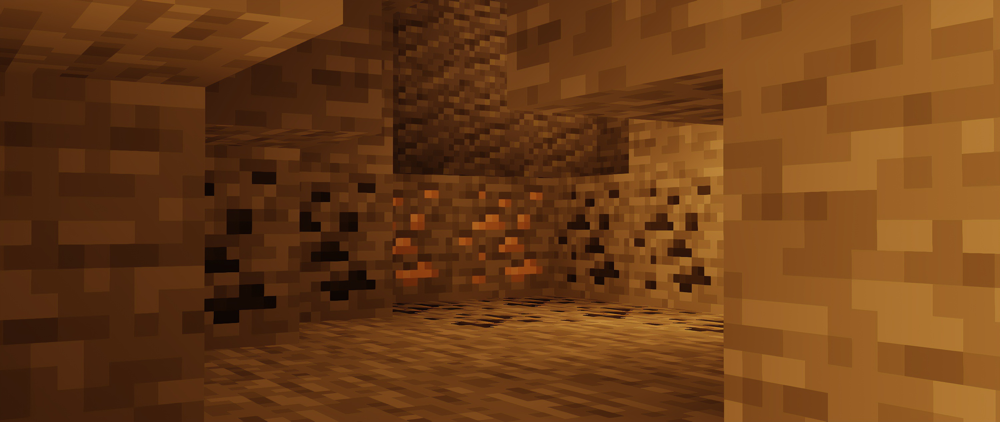

Surviving the Deepslate Caves
October 03, 2026 by Lincoln Green

Venturing below Y-level zero introduces dangerous cavern systems guarded by Warden shrieking sensors and tight deepslate passages. Efficient cave exploration requires careful lighting, steady shield management, and constant observation of structural acoustic cues. A single uncalculated step can trigger an ancient sculk catalyst, turning a standard mining expedition into an intense scramble for survival.
To maximize resource yields while safeguarding your inventory, prioritize establishing fortified forward bases along aquifer perimeters. Setting water elevators, marking branch junctions with directional torches, and storing intermediate raw ore deposits in secure ender chests minimizes downtime and protects your hard-earned diamond veins from catastrophic falls into hidden lava caverns.